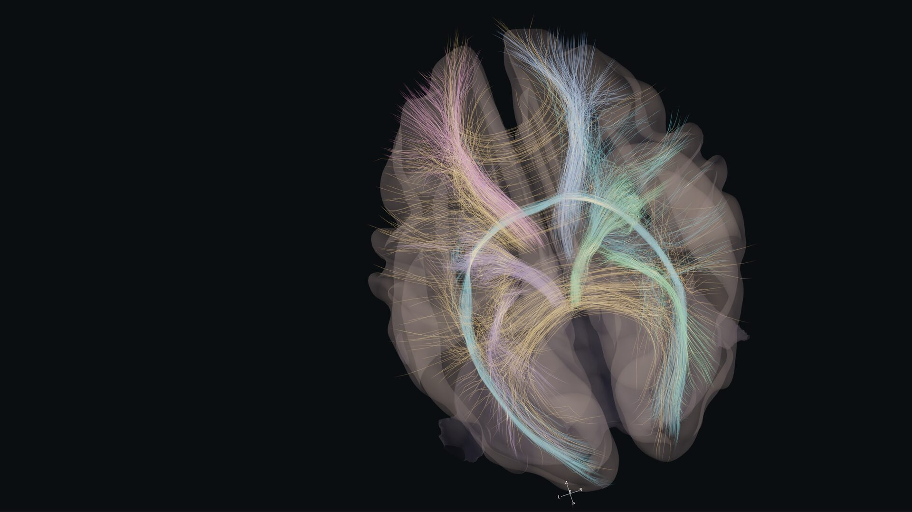
The brain, as pathways.
An interactive coursebook for neurosurgical residents. Cortex, white matter and networks in one frame, taught as relationships you have to explain, not pictures you have to recognise.
Free, in the browser. Reference atlas, not navigation.
Commissural and projection bundles, superior view. Captured from the live atlas.
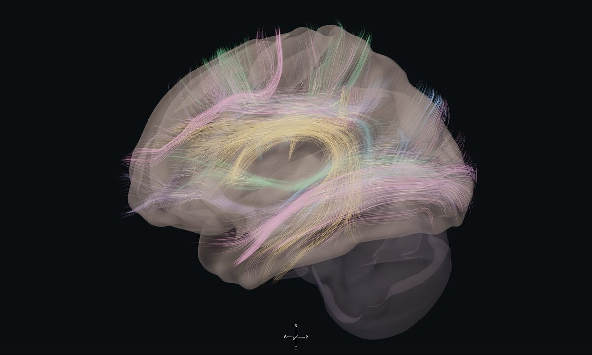
Association
Arcuate, SLF, IFOF, ILF, uncinate, frontal aslant.
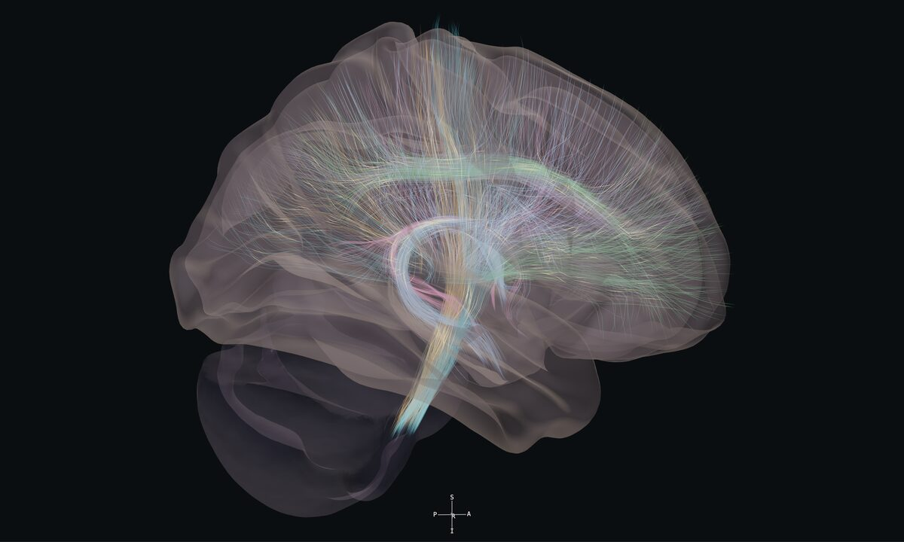
Projection & limbic
Corticospinal, thalamic radiations, cingulum, fornix.
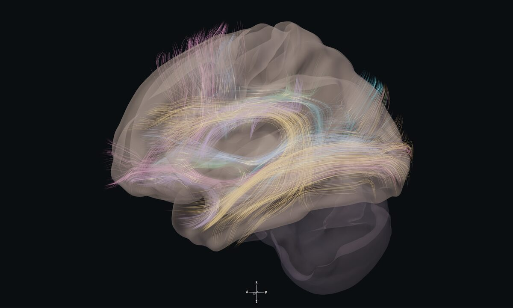
Language
Dorsal and ventral streams on the left hemisphere.
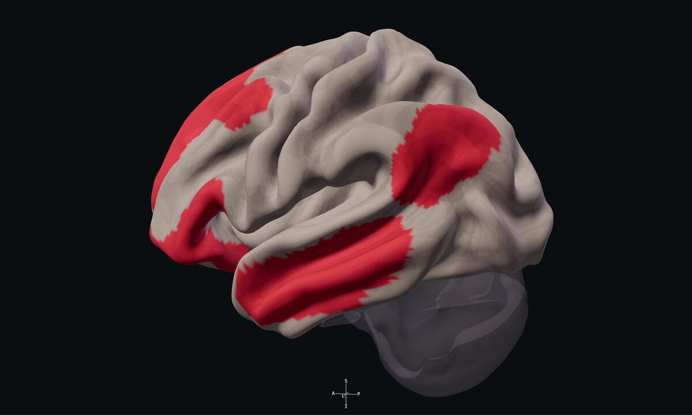
Networks
Yeo-7 networks painted on the cortex, here the default mode network.
Ten lessons. Orient, compare, explain.
Each lesson runs on the live atlas. You locate the structures, put the neighbours in the same view, and answer a resident-level question before the explanation and its sources are revealed.

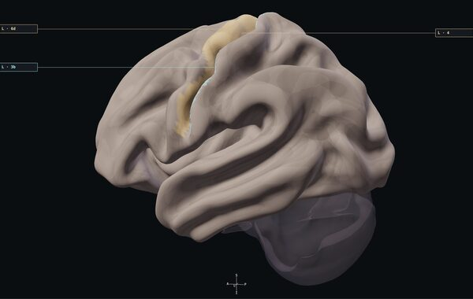
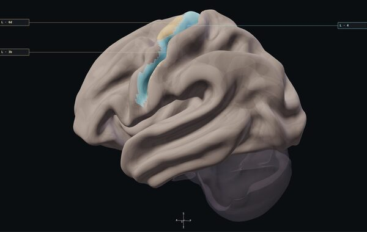
Orient, Compare, Explain on the central region lesson.
-
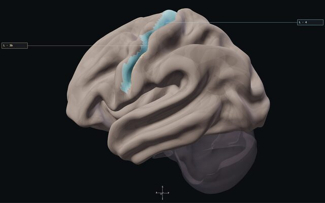
Read the evidence
A highlighted parcel, a nearby tract and weakness appear in one report. What does each actually establish?
Left hemisphere reference
-
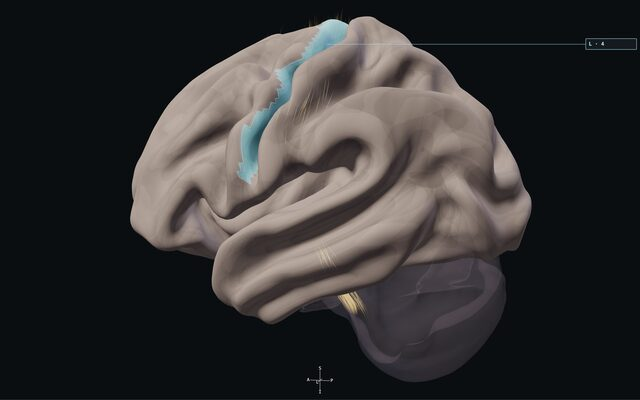
When the tractogram is incomplete
A tract looks short and sparse. How do you describe the discrepancy without declaring it absent?
Left hemisphere reference
-

Central region & motor pathways
How can you explain a motor deficit when the area-4 outline is preserved?
Left hemisphere reference
-

Frontal aslant & speech planning
After a left medial frontal procedure, speech initiation and spontaneous movement fall despite stable MEPs. What would change your interpretation?
Left hemisphere reference
-
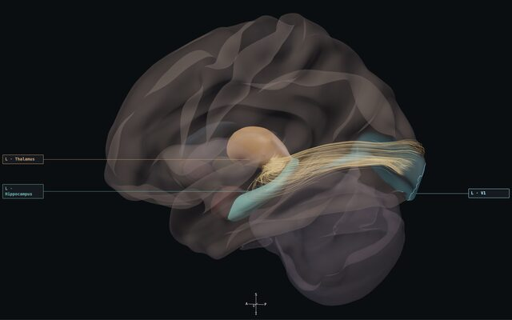
Optic radiation & temporal stem
An expected anterior loop appears short in a reconstruction. What would you investigate first?
Left hemisphere reference
-
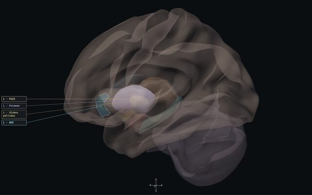
Insula & central core
A left insular lesion extends toward the lentiform complex despite preserved naming. Which observations are still needed?
Left hemisphere reference
-
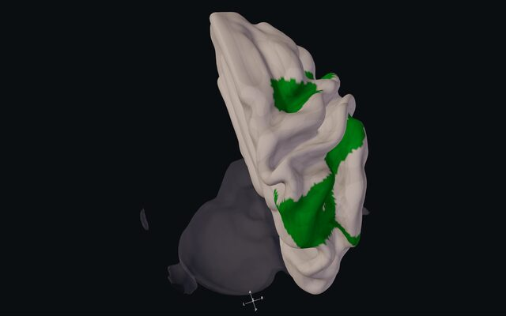
Attention & spatial awareness
A person omits items on the left during search despite useful hand strength. How would you localize the question?
Right hemisphere reference
-
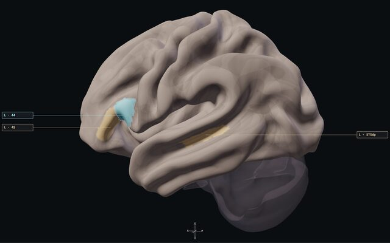
Language across pathways
Speech is fluent but meaning-related substitutions occur, with repetition better preserved than comprehension. Which relationships matter?
Left hemisphere reference
-

Default mode & memory relationships
Motor examination and conversation seem preserved, but recalling familiar events is difficult. What further anatomical account is needed?
Left hemisphere reference
-
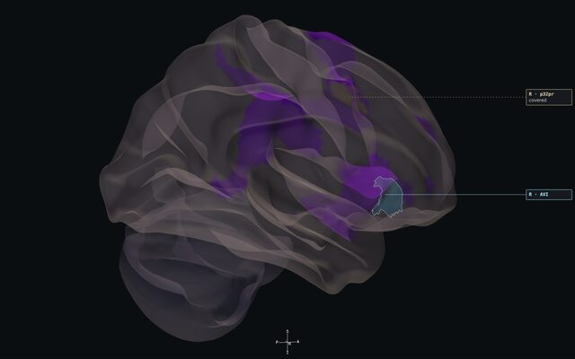
Salience, insula & control
After a frontoinsular procedure, redirecting behaviour toward relevant events is difficult. What must a useful explanation include?
Right hemisphere reference
Case Conference.
Four fictional glioma teaching cases for senior residents. Read the vignette, commit to an anatomical account, then compare it with the debrief. Synthetic MRI-style plates, no patient data.
Open the Case ConferencePilot. Debriefs are awaiting independent clinical review.

Made by a neurosurgeon who teaches residents.
Hodos was built by Dr. Erion de Andrade, neurosurgeon in Porto Alegre with skull base and neuro-oncology fellowships at Cleveland Clinic and Emory University, and residency preceptor at Hospital São José, Santa Casa de Porto Alegre.
Published data, cited on every lesson.
HCP S1200 group surface, HCP-MMP1 parcels, HCP1065 sampled tractography, Melbourne subcortex atlas. Licences and limits are on the sources page. Not patient-specific mapping, not navigation.